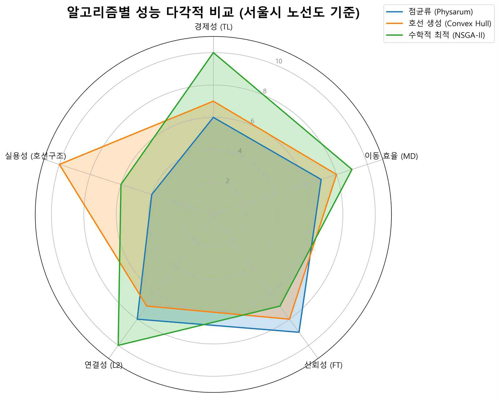

← 연구 개요로 돌아가기


COMPARISON
세 알고리즘 성능 비교
서울시 지하철(403역) 적용 결과를 실제 서울 지하철과 비교합니다.

다섯 축으로 본 세 알고리즘
바깥쪽으로 뻗을수록 그 항목이 우수합니다. 서울시 노선도 기준, 다섯 항목을 정규화해 비교했습니다.
- 경제성 (TL) — 총 길이가 짧을수록
- 이동 효율 (MD) — 평균 이동거리가 짧을수록
- 신뢰성 (FT) — 고장 허용성이 높을수록
- 연결성 ($\lambda_2$) — 대수적 연결성이 높을수록
- 실용성 (호선 구조) — 실제 노선도 형태로 산출되는가
점균류 — 신뢰성·연결성 축이 크고 경제성·이동효율·실용성은 안쪽입니다. 망이 촘촘해 튼튼한 대신 총 길이가 길어 경제성이 낮습니다.
NSGA-II — 경제성·이동효율·연결성 축이 크고 신뢰성·실용성은 안쪽입니다. 수치 효율은 높지만 결과가 실제 노선 형태로 나오지는 않습니다.
호선 기반 — 실용성 축이 크고 나머지 네 축은 중간 수준입니다. 특정 축에 치우치지 않고 고르게 분포합니다.
세 알고리즘은 각기 다른 축에 강점을 둡니다 — 점균류는 신뢰성, NSGA-II는 효율, 호선 기반은 실용성과 고른 분포. 어느 하나가 절대적으로 우수하기보다, 설계 목적에 따라 적합한 알고리즘이 달라집니다.
| 알고리즘 | $TL$ (km) | $WMD$ (km) | $FT$ | 특징 |
|---|---|---|---|---|
| 실제 서울 지하철 | 423.93 | 12.07 | 0.889 | 참조 기준 |
| 🧫 점균류 알고리즘 | >4000 | ~10 | >0.93 | 신뢰성 우위 |
| 🧬 NSGA-2 (최적해) | 다양 | 다양 | 다양 | 파레토 50개 해 |
| 🗺️ 호선 기반 알고리즘 | 444.08 | 12.61 | 0.930 | 고른 분포 |
실제 서울 지하철 — 브릿지/사이클 분류 (Matlab)
빨강=브릿지(취약) / 파랑=사이클(안정) · $TL=12.03,\ MD=0.403,\ FT=0.89$
지름길 임계값 $\lambda$ 민감도 분석
$\lambda=3\sim13$ 범위에서의 $TL,\ WMD,\ FT$ 변화
호선 기반 알고리즘 — 서울시 통합 노선도
$TL=444.08\ \mathrm{km},\ WMD=12.61\ \mathrm{km},\ FT=0.930,\ Cent=0.089$